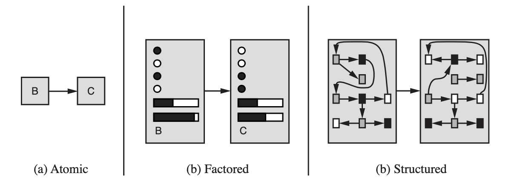
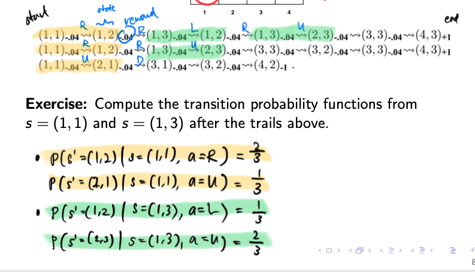

Terminologies
-
An agent is anything that perceives its environment through sensors/percepts and acting upon the environment through actuators/actions.
agent = architecture (hardware) + program (software)
A rational agent is one that does the right thing.
An agent program takes in current percept as input from the sensors and returns an action to the actuators. There are 4 kinds of agent programs:
-
Simple reflex agent
An agent that acts based on the current situation, ignoring any history
-
Model-based agent
An agent that acts based on its view of the world ("model")
-
Goal-based agent
An agent will act based on goals.
- "Problem-solving agent" (a term for agents that use atomic representations)
- "Planning agent" (a term for agents that use factored or structured representations)
-
Utility-based agent
An agent that acts based on what will make it happy ("utility") eg. quicker, safer, shorter.
-
Learning agent
An agent can start operating in any environment known or unknown, then become more competent. This involves
-
-
"Doing the right thing" is quantified by a performance measure.
-
Environments
- [fully observable, partially observable]
- [deterministic, stochastic]
- [static, dynamic]
- [env has single agent, env has multiple agents]
- [episodic, sequential]
- [discrete, continuous]
-
Examples of sensors:
- ...
-
Examples of actuators:
- ...
Representations
Ways to represent states and transitions between the states

-
Atomic representation
Everything is abstracted into states eg. State B and State C.
Algorithms that work with atomic-level of representations: search, Markov decision process, game theory, HMM
-
Factored representation
Every state is a vector or a set of attribute-value pairs. State variables are often called fluents.
Algorithms that deal with factored representations: classical planning, machine learning
-
Structured representation
???
Knowledge base
Predicate: At
Fluent: At(loc, grid)
Successor state axiom: a statement to define ways to get to a fluent
⚠️ Don't need to include actions that don't have any effect
⚠️ Include all possible combinations!
Propositionalise: grounding
Description: A set of states. ~Poor ∧ Famous(agent)
Problem
A problem is formally defined by 5 components:
- Initial state
- Actions
- Transition model (the different results for taking different actions)
- Goal
- Path cost
The initial state, actions and transition model implicitly define the state space: the set of all states reachable from initial state by any sequence of actions. The state space forms a directed graph.
"Planning problem": Given a starting point ("initial state") and a goal, what are the actions to take?
Applications:
- High-level planning for intelligent robots
- Autonomous systems
- Problem-solving
Properties of planning problems
- Are the actions deterministic or nondeterministic?
- Are there probabilities?
- Is there full or partial observability?
Single-agent planning:
- Simple problem → Problem with many states → Problem with many states + uncertainty
Multi-agent planning:
- Problem with multiple agents (game theory)
Types of planning algorithms:
- Classical planning
- Markov decision process
Planning means to devise a plan of action to achieve one's goals (goal-based agent). Types of planning agents:
- Search-based problem-solving agents (atomic representation)
- Classical planning agents (factored representation)
Planning
-
Simple planning
Dijkstra's algorithm. This is not feasible. Planning algorithms try to avoid constructing the whole graph.
-
Classical planning
-
Nondeterministic planning
-
Probabilistic planning
Resources
https://spinningup.openai.com/en/latest/
Example domains https://bitbucket.org/ipc2018-classical/domains/src/master/
- int8.io
- jeremyjordan.me
https://int8.io/monte-carlo-tree-search-beginners-guide/
https://planning.wiki/guide/whatis/aip
Introduction to RL and Deep Q Networks | TensorFlow Agents
http://gki.informatik.uni-freiburg.de/teaching/ss05/aip/aip00.pdf
https://pytorch.org/tutorials/intermediate/reinforcement_q_learning.html
https://www.jeremyjordan.me/markov-decision-process/
https://lilianweng.github.io/posts/2018-04-08-policy-gradient/
Simple planning
1. Simple planning (using search)
Simple planning solves problems with atomic representation. A problem is defined by:
-
Initial state
-
Actions
-
Transition model
Returns the resulting state that results from performing an action from a state.
-
Goal test
-
Path cost
Problem-solving agents are goal-based agents that construct sequences of actions ("planning") to achieve its goals. This process is called search. An agent must formulate a problem, then identify the goal. It then proceeds with a search algorithm to find the solution.
AIAMA calls these agents as "search-based problem-solving agents."
Examples:
- Shortest path
- Travelling salesman problem
Uninformed search algorithms
Strategies that do not care if a non-goal state is "more promising" than another.
-
Uniform-cost search (Dijkstra's algorithm)
Use priority queues to keep track of frontiers
-
Breadth-first search
Use queue to keep track of frontiers
-
Depth-first search
Informed search algorithms
Strategies that know whether a non-goal state is "more promising" than another.
üí° Heuristic function is an approximation function. An admissible heuristic means it does not overestimate the actual
üéí Is something an admissible heuristic? 1. Argue from the point of relaxed problem = does not overestimate = trajectory is a superset of the original problem 2. Conclude that the optimal path is an optimistic estimate The optimal path to a superset ????
-
Best-first search. Eg. A* search
At every node, find the path that minimises
where is the next node, is the cost of the path from the start to , and is the heuristic function from to goal.
A* uses a priority queue.
-
Greedy best-first search
-
Memory-bounded heuristic search
- IDA* (iterative deepening A* search)
Classical planning (uaing state-space search)
Classical planning agents represent states and their transitions using a factored representation.
AIAMA calls these agents as "planning agents."
A state is represented using a set of state variables or fluents. eg.
{
At(plane1, time1) = True,
At(plane2, time2 = True,
At(plane1, time2 = True
}
Planning becomes a state-space search. Note that states are transformed via operators (actions).
Languages
Languages used in classical planning:
-
PDDL
Domain
üí° "Plan once, run everywhere". A domain is a greater problem, defining the 'world'. In this world, you define entities ("types") like places, vehicles, general objects. You also define yes/no statements ("predicates") in combination with the instances of the types. Lastly, you define the things that you can do ("actions") that can be taken in this world.
-
Requirements
(:requirements :strips :typing) -
Types
(:types city place physobj - object package vehicle - physobj truck airplane - vehicle airport location - place ) -
Predicates
(:predicates (in-city ?loc - place ?city - city) (at ?obj - physobj ?loc - place) (in ?pkg - package ?veh - vehicle)) -
Actions
(:action load-airplane :parameters (?pkg - package ?airplane - airplane ?loc - place) :precondition (and (at ?pkg ?loc) (at ?airplane ?loc)) :effect (and (not (at ?pkg ?loc)) (in ?pkg ?airplane)) ) (:action unload-truck :parameters (?pkg - package ?truck - truck ?loc - place) :precondition (and (at ?truck ?loc) (in ?pkg ?truck)) :effect (and (not (in ?pkg ?truck)) (at ?pkg ?loc)) )
Problem
üí° A problem is a real problem to solve. A real problem is defined by its goal ("goal") and how things are looking currently ("initial state"). You also specify instances of the types ("objects") like "London" if the type is location.
-
Goal
(:goal (and (at p1 north) (at p2 south)) ) -
Initial state
Ground predicates that are positive only
(:init (in-city cdg paris) (in-city lhr london) (in-city north paris) (in-city south paris) (at plane lhr) (at truck cdg) (at p1 lhr) (at p2 lhr) ) -
Objects
(:objects plane - airplane truck - truck cdg lhr - airport south north - location paris london - city p1 p2 - package)
-
-
STRIPS
-
Actions in a state
Action(Load(c,p,a) Precond: At(c,a) ∧ At(p,a) Effect: ¬At(c,a) ∧ ... ) -
Initial state
Init(At(...) ∧ Heigh(...)) -
Goal
Goal(At(...) ∧ Heigh(...))
-
-
SATS
-
Propositionalise the actions
-
Initial state
Instead of
assert every fluent.
-
Propositionalise the goal
-
Add successor-state axioms
-
Add precondition axioms
-
Add action exclusion axioms
-
üí° Why is dropping negative effects (in preconditions) better? It becomes easier to achieve all goal literals because preconditions are easier to meet. It becomes a relaxes problem because a plan in the original problem is also a valid plan in the transformed problem.
ADD list and DEL list

Heuristics
- Ignore delete lists
- Ignore preconditions
- Decompose problem into subproblems
How to reformulate problem
- Create the new type if needed. Eg.
time. - Add predicate to indicate where we are in wrt to the new type. Eg.
at_time(t1). Add predicate to move between the objects (that will always be true). Eg.time_next(t1 t2). - Update actions to include these.
- Create the objects if they don’t already exist. Eg.
t1 t2 t3 - time. - Update the initial state to include rules to guide the planner how to navigate in the search space. Eg.
time_next(t1 t2) time_next(t2 t3)
Algorithms
Forward search
AKA forward state-space search
Examples: Fast Downward
Backward search
AKA backward relevant-states search
"Regression"
Only consider actions that are relevant to the goal or current state.
To regress from goal to a description ,
Boolean satisfiability
NP-complete algorithm
At time step 1, set a set of boolean variables. Through axioms (if the set of bools is like this then go this, else go there), you move to the next step. Repeat until you have all True. The plan is the different sets of bools for each time step. The solution is setting the right actions.
Graphplan
This uses a planning graph data structure. It works only for propositional planning problems (no variables, only literals).
Like the normal graph but include mutually exclusive actions and propositions. Then start searching from the goal.
- Heuristics that can be derived from planning graph:
- 1 goal
- Cost of achieving any goal literal (can be estimated from the level in which it first appears)
- Conjunction of goals
- Max-level (take the max of the levels of the goals)
- Level sum (take the sum of the levels of the goals). Can be inadmissible.
- Set level
- 1 goal
Planning in a stochastic environment
To model decision making in situations where outcomes are partly random and partly under the control of a decision maker, we use a mathematical model called Markov decision process.
Markov Decision Process = "if i see this state, i can forget about the history"
= (states, actions, rewards, transitions)
Settings
- Horizon (finite or infinite)
- Discounted or not discounted
Markov decision process: every decision point does not require you to know about the previous history
How to plan in a stochastic environment? We want a policy that tells us what action to take given a state. To get this policy, we need to run value iteration or policy iteration. Sometimes we don't need to have the entire policy possibly because there are too many states. In this case, we perform online search (finding the best action at that state).
State
Action
Transition matrix
üí° If I take action at state , what is the probability that I end up at state ?
⚠️ Note that action has already been determined.
⚠️ Transitions must be Markovian
Reward and reward function
A function ("reward function") that maps a state to a value ("reward").
Reward functions can also depend on both the state and the action:
Policy
A function ("policy") that maps a state to an action. It answers the question "what action should I take at a particular state?"
Utility of a sequence of states is the sum of (discounted) rewards
Utility of a state
The utility of a state is a measure of how “useful” a state is. To be used later to compare between utilities of other states.
= utility of a sequence of states as taken by some policy
= rewards from current state + rewards from future states
Value function
The value function is the utility of a state under an optimal policy. It is the Bellman equation itself.
üí° The value function of a state is the sum of (1) the current reward and (2) the expected (or weighted) value from taking the ‚Äòbest‚Äô action.
For MDPs where the reward function depends on both state and action,
From the value function , we can derive the optimal policy
üí° Suppose you are in a state . For every action in this state, compute its weighted value (based on the transition probabilities). Then find the action that returns the highest expected value.
Q-function
Like the value function, the Q-function is the utility of taking an action at a given state under an optimal policy.
üí° (what's the expected reward given that you start from a certain state and take a certain action )
The higher the Q-value, the more desirable is the action at that state.
From the Q-function, we can derive the optimal policy :
Sum of rewards
The sum of rewards for an episode that starts with state .
Two notations exist:
- indicates the cumulative rewards for the th episode.
- (discounts are omitted for readability)
Trajectory
A sequence of states that have been undertaken is called a "trajectory" or an "episode".
Advantage function
üí° How much is a certain action good or bad given a certain state. how relatively happy you are taking the action a (given that you're in state s) = what's so good about taking action a = what's the advantage of taking action a. I used 'relatively' because Q(s,a) has a similar definition but without the relative.
Calculating no. of states:
-
TSP
cities. A salesman must visit every city in a graph. Cannot visit any city twice.
State: visited 0, at city 4
State: visited 1, at city 2
For every time he is at a city, there are cities visited.
There are combinations where he can be.
-
Inventory control
Company has space to store .
Value iteration
Solutions to MDP can be found using dynamic programming by looking at the value function. Bellman update (notice the additional thing is just the max):
We iterate this for all the states.
üí° Update a state based on its own utility and the highest expected utility of its neighbours (discounted).
⚠️ Updating a set of values in value iteration is the same as updating a set of weights in gradient descent. You use the current iteration’s value, not the updated values from the current iteration.
-
Click here for example

⚠️ Value iteration might not be ideal if there are too many states.
Policy iteration
Policy iteration is a variant of value iteration.
-
Initialise to 0. Initialise randomly.
-
Policy evaluation (similar to Bellman update). Run for all states.
üí° For every state, the utility is (i) its own reward and (ii) the (discounted) sum of the expected utility of its neighbours.
-
Policy improvement: For every state, get the best action from the value function using max.
üí° For every state, see which action transits me into a state giving me the highest utility.
GPI
Generalised policy iteration
A variant of policy iteration.
Online search: MCTS
Sample a problem space randomly and repeatedly in order to obtain a more accurate understanding ("statistics") and to decide which action to take next.
Q-function in MCTS is defined as
And the action to take at state s is
-
Select a node
The policy to follow is . Calculate UCT (Upper Confidence Tree) for every child
where
and where
- is the sum of the returns from the th child
- is the no. of visits of the th child
- is the no. of visits of the current node
-
Expand
At this node, we select an action that hasn't been taken. Selecting that action means we will enter the state.
-
Simulate
In this part, the policy to follow is usually a uniform random policy.
-
Backprop
Update rewards and n_visits.
from __future__ import annotations
import numpy as np
from operator import itemgetter
import random
ACTIONS = [3, 2, 1, 0]
N_ACTIONS = len(ACTIONS)
class MonteCarloTree:
def __init__(self, state, depth=0):
self.n_visits = 0
self.rewards = 0
self.children = []
self.actions_not_taken = ACTIONS.copy()
self.state = state.copy()
self.depth = depth
self.is_terminal = False
# to keep track of nodes needed for backprop
# root node's responsibility
self.stack = Stack()
@property
def deets(self):
print(f"Fully expanded: {self.is_fully_expanded}")
print(f"Depth: {self.depth}")
print(f"Visits: {self.n_visits}")
print(f"Rewards: {self.rewards}")
def find_best_action(self,
max_depth=1,
n_rollouts=20,
**infos) -> int:
"""Only the root node should be calling this"""
# 1. Perform rollouts
for rollout_number in range(n_rollouts):
print(rollout_number)
# Step 1
node = self.select(max_depth)
# Step 2
node = self.expand(node, **infos)
# Step 3
rewards = self.rollout(node, **infos)
# Step 4
self.backprop(rewards)
# 2. Return action that had many visits
visits = [child.n_visits for child in self.children]
action, _ = max(enumerate(visits), key=itemgetter(1))
return action
def select(self, max_depth) -> MonteCarloTree:
"""
Traverse from root
If no. of children less than no. of actions, create new node.
Otherwise, do UCT
Only the root node should be calling this
"""
node = self
self.stack.push(node)
while node.is_fully_expanded and node.depth < max_depth:
node = node.find_best_child_uct()
self.stack.push(node)
return node
def expand(self, node, **infos) -> MonteCarloTree:
"""
Only the root node should be calling this
Return a child node
"""
action = node.actions_not_taken.pop()
state_new = self.get_next_state(state=node.state, action=action, **infos)
child = MonteCarloTree(state=state_new, depth=node.depth+1)
self.children.append(child)
self.stack.push(child)
return child
def rollout(self, node, **infos) -> int:
"""
Only the root node should be calling this
Play the game and return the reward
"""
sim = Simulator.create(node.state, infos["max_speed"])
reward = sim.step_through(node.state)
return reward
def backprop(self, rewards):
"""Only the root node should be calling this"""
while self.stack.is_not_empty:
node = self.stack.pop()
node.n_visits += 1
node.rewards += rewards
def find_best_child_uct(self) -> MonteCarloTree:
return self.children[0]
@property
def is_fully_expanded(self):
return not self.actions_not_taken
def get_next_state(self, state, action, **infos):
sim = Simulator.create(state, infos["max_speed"])
reward = sim.step(action)
return reward
class Stack:
def __init__(self):
self.data = []
def push(self, val):
self.data.append(val)
def pop(self):
return self.data.pop()
@property
def is_not_empty(self):
return len(self.data) > 0
class Simulator:
def __init__(self, state, max_speeds):
self.state = state
self.max_speeds = max_speeds
@classmethod
def create(cls, state, max_speeds):
return cls(state, max_speeds)
def step(self, action) -> int:
"""Environment and agent"""
# Environment
speeds = [random.randint(1, max_speed)
for max_speed in self.max_speeds]
next_state = predict(self.state,
speeds=speeds,
agent_coord=(None, None),
include_occupancy=True)
self.state = next_state
# Agent
x, y = np.where(self.state[1] == 1)
x, y = x[0], y[0]
if action == 0:
x = x-1
y = y-1
elif action == 1:
x = x+1
elif action == 2:
y = y-3
elif action == 3:
y = y-2
elif action == 4:
y = y-1
else:
raise ValueError
x = np.clip(x, 0, 9)
y = np.clip(y, 0, 49)
# State, reward, done
if (x, y) == (0, 0):
return 10, True
elif next_state[0, x, y] == 1:
return 0, True
else:
return 0, False
def step_through(self, action) -> int:
done = False
while not done:
reward, done = self.step(action)
return reward
Learning to plan in a stochastic environment
aka reinforcement learning
In the real world, we do not know the full model of the game (eg. transition rules). But one thing we have are observations. Observations are data.
Moreover, often we don't get feedback ("reward") until end of the game, hence making learning difficult. This becomes the temporal credit assignment problem where you need to know which move was the one that caused you to lose the game.
Goal of reinforcement learning is the agent wants to maximise its own rewards in this environment. At every step, the agent also gets a reward. The rewards is a feedback that measures the success or failure of the agent’s actions.

üí° So far it's an optimisation problem i.e. find the optimal policy. Now, we don't know the rules ("transition model") but you get them from observations. To get observations, we need to explore. Then, we learn from these explorations.
üí° Planners: (model → policy) Learners: (data → policy) where model = (states, transition rules / actions, rewards, etc.)
üëâüèª Experience: data
Prediction: fix , learn
Control: fix , learn
üëâüèª Episode: initial state to terminal state
Learning the Q-function
aka value learning, model-free RL
Recall that if at every state, we know what is the best action to take,
this means we can create an optimal policy
So how do we get utility from the best action? By using the Q-function. Recall that Q-function is a mapping
So...
Because Q is all we need, what makes up Q then becomes an abstraction to us:
- Don't need to know about the transition
- Don't need to know about the reward functions (after all we only need to take argmax of Q)
We can instead use what we've experienced to develop a more accurate representation of , which in turn helps us to develop a more optimal policy to follow. This learning is incremental learning.
Direct utility estimation
The Q-value is the mean of rewards across episodes starting from that state.
⚠️ High variance, estimates might not be accurate
⚠️ Must complete episode before learning
-
Example

Updating when a new episodic return comes in:
where:
- is the estimate after receiving returns
- is the new data (from initial to terminal state)
- can be considered as the prediction error
MC control with GPI
- Policy evaluation using MC
- Policy improvement using greedy action
GLIE epsilon-greedy MC control
- Sample episode using Q-function and ε to get
- ???
TD learning
aka Temporal difference learning
Online learning; update the value function at every step in an episode.
where the TD target consists of reward from 1 time step.
Variants
-
-step TD learning
Instead of using reward from 1 time step, use steps.
-
TD()
Instead of taking the sum across steps, use a weighted sum. means no weighted sum.
SARSA
This is an
- on-policy
- 1-step learning
- -greedy for action selection.
Value of the state-action pair is updated as:
where is the action already taken at and
Data needed:
Change:
Q-learning
This is an
- off-policy
- 1-step learning
where is the action taken at (need to find the max of all the different actions taken from !) and
Data needed:
Change:
Deep Q-learning
Deep Q-network
This is like Q-learning. It is
- off-policy
- 1-step learning
- Q-function is approximated using a deep neural network ("function approximation")

It is still ‘Q’ in a sense that the action still affects the rewards. However, instead of returning the utility in the normal setting,
we return a “distribution of the utility for each action”
Parameter updates
Flow of events:
Note that here generates a probability vector. Given
where these two are vectors of probabilities representing each action. We want to minimise the loss so that gets smarter:
Online Q-learning is tricky because of the deadly triad. It's common to use experience replay, a buffer of recent transitions that will be sampled randomly to train the network.
üí° It is learning the temporal difference.
-
Have 2 models (the behaviour
Q_currand the targetQ_target)Q_curr = Q_target.copy() -
Generate many experiences and save them
s = env.give_me_the_state() a = Q_curr(s) r, s' = env.step(a) ExperienceBuffer.save((s, a, r, s')) -
Prepare to train model
s, a, r, s' = sample(ExperienceBuffer) -
Calculate loss. Note that
Q_currshould try to make it closetd_pred = Q_curr(s) td_true = r + Q_target(s') loss = MSE(td_pred, td_true) -
Backprop. This will update
Q_curr.loss.backward() -
Update the target policy once in a while
Q_target = Q_curr.copy()
Data needed:
Change:
Learning the policy
AKA policy search
In policy search, we try to find a policy. One example to represent a policy is by using Q-functions.
The policy is parametrised by . The goal is to adjust to improve policy.
Often use a stochastic policy and often we want it to be differentiable (because we want to use gradient descent). An unbiased estimate for gradient ascent is sufficient; no need for exact gradient.
Recall that utility of a state
Parametrise it with
Then differentiate wrt to :
but we can sample from the gradient using Monte Carlo methods using importance sampling (where is a probability distribution)
Policy gradient
Directly optimise the policy π(s). Output the probability distribution over the space of all actions, given that state. The probability which will result in the highest Q-value. No need with the intermediate Q-function.

“Taking a left will result in a maximum Q-value of 0.9.”
To choose an action, draw a sample from this probability distribution.
Note that the advantage of using this is that one can resort to continuous action spaces.

Here’s how we can make it continuous:

If we want to take an action, sample from the policy (distribution).


REINFORCE
Extend to a sequence ("trajectory" or “episode” ) of states, actions and rewards (expectation).
where is the probability of generating a sequence , and is the sum of rewards from trajectory .
Then we use policy gradient theorem
Then use Monte Carlo sampling to approximate the gradient summing over trials and steps.
From here, we use an online update then we get
where is the total reward received from .
REINFORCE with baseline
Baseline function is to help to reduce variance. This function is used to get the advantage function.
üí° Advantage function is Q(s,a) - V(s). It tells about the extra reward that could be obtained by by taking that particular action. This number can be estimated using TD error.
Actor critic
Use a TD method instead of Monte Carlo estimate with advantage function.
Actor = learn a policy
Critic = learn Q function used for evaluation
TRPO
Trust Region Policy Optimization
Higher-level motivation: Sometimes a poor update (in policy gradient methods) can cause a bad decrease in performance. TRPO & PPO avoids this by trying to get monotonic improvements of policy value.
Motivation: Example trajectories (sampled from a policy in production) depend on the policy itself. But we are also changing the policy as we optimise it. This makes optimisation difficult.
What do we do?
-
We discern the objective in terms of old and new policy ( is to be maximised)
-
We weight the states (in a trajectory) according to whether they come from the old policy or the new policy.
-
The resulting equation becomes hard to optimise, so we use a sampled approximation.
It can be shown that the expression below (RHS) has a lower bound (hence resulting in monotonic improvements of the policy). "Minorise-maximisation" algorithm.
If , . Otherwise, .
-
Apply trust region constraint (for faster convergence). Take larger steps in a robust manner.
-
Further approximate the second term using importance sampling.
-
Further approximate using expected KL divergence instead of maximum KL divergence.
PPO
Proximal Policy Optimisation
Like TRPO but with
- One small adjustment
- Simplified the approximated objective function
- Clip the objective function. Discourages excessively large policy updates.
Imitation learning
Use supervised learning to learn a policy using labels provided by an expert ("teacher policy"). An example is ALVINN, a self-driving car that learns by imitating a human driver.
Algorithms:
-
Naive (only the expert)
⚠️ Limitation The distribution of the training set (from the expert policy) is usually a (smaller) subset of the true distribution. This is because expert might have never reached certain states (because of its expertise). If the function approximator encounters this, it wouldn't know what to do because it has never seen this during training.
⚠️ Limitation Error propagation on structured prediction (for autoregressive problems)
-
DAgger (Dataset aggregation)
There are lessons:
- For the first lesson, the teacher is the driver. For subsequent lessons, we are the driver.
- During the lesson, we collect training samples from the driver (just the state!).
- After the lesson (where we were the driver), we ask the teacher to tell us what we should have done correctly at every state we were in. We write these in a csv file.
- Then we learn these training examples.
Learning the transition model
aka model-based RL
ADP
Model-based prediction
aka Adaptive dynamic programming
P(s'|s,a) can be learnt using supervised learning.

Learning from feedback
Learning from human preferences
Planning in a stochastic environment with partial observability (using POMDP)
We use a partially observable MDP as a mathematical framework to model an environment with partial observability.
POMDPs have (among others):
- States
- Actions
- Transitions
- Rewards
- Observation / sensor model
The probability of perceiving evidence in a state.
Belief state (current belief): probability of being in a state given the history. This is updateable as it uses the Markov property.
If and , it means that most likely we are in state 1.
⚠️ Belief space is continuous!
Reward function
üí° Optimal policy can be described as a mapping from belief to action (in contrast to a mapping from a state to action).
Updating belief:
At , agent performs action (( a \) and to go into state and receives evidence .
Value iteration
Compute all alpha vectors
Online search
- POMCP
- DESPOT
Planning in a multi-agent environment
We use game theory to model an environment with agents who make rational decisions.
Each player tries to maximise its own expected utility ("rational agent")
How do you maximise utility knowing that every other player is also maximising utility?
Uncertainty comes from decisions of other players
"once you enter an equilibrium, you won't want to switch"
üí° Rational players will go for Nash equilibrium. If you're not at equilibrium, there will be one player who can outdo you.
üí° A solution means to find strategies for each person so that an equilibrium is achieved
Single-move / simultaneous games
Defined by
-
Players/agents
-
Actions
-
Utility ("payoff") function (strategic form or normal form)

Each player adopts and executes a policy ("strategy"):
- Pure strategy: deterministic
- Mixed strategy: randomised based on a probability distribution
Each player is then assigned a strategy ("strategy profile").
When each player adopts a rational strategy, then we call it a solution.
When each player has a dominant strategy, we call it a dominant strategy equilibrium.
Prisoner's dilemma: it's a dilemma because they should’ve chosen (refuse, refuse) instead of (testify, testify) where they are both rational.
Nash equilibrium is when changing strategy doesn't make it better (?)
To test if at equilibrium, fix all except one, see if changing strategy will improve
There will always be an equilibrium is players adopt mixed strategy.
üí° Strategy ‚âà policy ‚âà solution
Players can play games that can be characterised by:
- No. of players
- If payoffs sum to 0
- If players adopt pure or mixed strategies
Our goal is to find a Nash equilibrium because that's what rational agents should do otherwise they'll lose out. The following are ways to find the Nash equilibrium depending on the situation:
2-player non-zero-sum games
2-player games (non-zero sum)
-
Pure strategy
For each player, remove pure strategies that are strictly dominated by another pure strategy. Then see if there is a strategy profile left.
üí° No Nash equilibrium can involve a strictly dominated strategy. So it should be removed.
⚠️ Nash equilibrium may not exist.
-
Mixed strategy
Assign a probability of choosing an action for the 2 players with and respectively. Find the solution where utilities for selcting every action is the same.
2-player zero-sum games
Such games can be classified into:
- imperfect information games
- perfect information games
The sum of the payoffs for any strategy profile is 0. As such, we only need to consider the payoff of one player.
-
Pure strategy
-
For each player, remove pure strategies that are strictly dominated by another pure strategy. Then see if there is a strategy profile left.
üí° No Nash equilibrium can involve a strictly dominated strategy. So it should be removed.
-
We adopt a maximin strategy for row and minimax strategy for column player.
üí° The maximin strategy is based on the minimax theorem which says that this will result in a Nash equilibrium. It does not matter who goes first ([minimax,maximin] or [maximin, minimax].
Example:
t1 t2 t3 s1 1 6 0 s2 2 0 3 s3 3 2 4-
Use the maximin strategy for the row player.

-
Use the minimax strategy for the column player.
-
-
-
Mixed strategy
-
For each player, remove pure strategies that are strictly dominated by another pure strategy. Then see if there is a strategy profile left.
üí° No Nash equilibrium can involve a strictly dominated strategy. So it should be removed.
-
Recall that we are trying to find the probability distribution for each of the players. Assign a probability of choosing an action for the 2 players with and respectively. Find the solution where utilities for selecting every action is the same.
c1 c2 r1 1 6 r3 3 2Let be the probability that will be played under the mixed strategy .
The maxmin strategy is .
Let be the probability that will be played under the mixed strategy .
The minmax strategy is .
The value of this game, using the first row of the matrix and , is
-
Other games
(Computationally intractable)
Sequential games
Algorithms
- Find equation of subtree (subgame)
Example strategies
Repeated games
Algorithm
Example strategies
- Perpetual punishment strategy
- Tit-for-tat strategy
Multi-armed bandit problem
We have different arms to pull (denoting possible actions). Each arm has an unknown reward distribution. We want to pull the arms several times, say 1000, and maximise the rewards we get. What do we do?
Characteristics of learning
- Greedy
- GLIE (Greedy in the Limit with Infinite Exploration)
- Policy must try each action in each state an unbounded no. of times
- Policy will must eventually become greedy
- On-policy or off-policy learning
- On-policy: data used for learning generated by the policy being learned
- Off-policy: maybe we don't want to disrupt the policy being learned with new data, so we use another policy
- Behaviour policy : currently in operation
- Target policy : policy to learn
On-policy vs. off-policy learning
In off-policy learning, a problem we face is that the distributions from both policies are different. As a result, things we calculate from each distribution (eg. during calculating loss?) will produce different results. So what do we do?
We need a method that can adjust the averages so that the estimates from the target policy are the same from the behaviour policy's distribution. One way to do this is importance sampling.
How we do it is we calculate the importance sampling ratio of the sequences (trajectory) between both policies.
Based on this value, we can update the Q values accordingly.
üí° On-policy learning: agent follows the same policy which is iteratively improving
üí° Off-policy learning: agent doesn't follow the same policy which it is learning. It instead follows a behaviour policy while learning a target policy.
Exploration algorithms
Explore, then exploit
- Try each arm times.
- Select arm with the highest reward.
- Stick with this arm for the rest of the game.
ε-greedy
Select greedy action with probability
Select random action with probability
Can set to make it GLIE
UCB
Choose Arm 3 (choose action 3)
Arm 1 [ ]
Arm 2 [ ]
Arm 3 [ ]
Arm 4 [ ]
"Optimism in the face of uncertainty heuristic"
- Add the error bound to the Q value
- Select the action that maximises the new Q
Thompson sampling
Using Bayes' rule to compute posterior. What's the distribution of the reward given past info and prior?
Deadly triad
Instability and divergence
- Function approximation (eg. DNN)
- Bootstrapping: using existing estimates as targets rather than complete returns eg. TD (as opposed to MC)
- Off-policy training: training on transition other than that produced by the target policy
Function approximation
Often done by learning from data (hence in this appendix).
State to action
State to value
Function approximation approximates utility function as a function of state variables.
Applications
- AlphaGo beats top human player at Go (2016)
- AlphaZero from Self-Play (2018)
Decision theory
Making rational decisions means making decisions that follow the 4 axioms of decision theory:
- Orderability (comparability)
- Transitivity
- Continuity
- Substitutability
When deciding between 2 options which can either be a fixed outcome ("state") or a gamble ("lottery"), we compare the usefulness ("utility") between them, i.e. assigning a function to them.
Every lottery has a number of possible outcomes or states and their probabilities attached to them. The utility of any lottery is the same as its expectation ("expected utility").
where "S" is used to denote state.
By the principle of maximum utility, an agent is said to act rationally ("rational") if it chooses an action ("action") that maximises the expected utiltity. So apparently you can also calculate the expected utility of an action: for every possible outcome, multiply its utility and its probability, then sum all these products.
üí° von Neumann-Morgenstern utility theorem says that utility of a lottery is the expected value of the utilities of the outcomes
Principal of optimality
The principle of optimality states that if we consider an optimal policy, then the subproblem yielded by our first action will have an optimal policy composed of remaining optimal policy actions.
This leads to the idea of recursion.
Counting
If there are positions and cars, how many different possible combinations will there be if multiple cars can be at the same position?
Ans: This means that every car can take different positions.
car1 [1,2,...,n]
car2 [1,2,...,n]
...
cark [1,2,...,n]
So there will be different combinations.
MDP
An MDP is a sequence of .
If probabilities or rewards are unknown, then it's a reinforcement learning
Exploration algorithms
ε-greedy
Thompson sampling
Only if transition and reward functions can be maintained and well approximated
RMAX
Optimism in the face of uncertainty heuristic.
- If you don't know (after seeing the state times) the reward of (s,a) set it to i.e. the largest possible reward.
- If you don't know (after seeing the state times) the transition probabilities of an (s,a), assume it goes deterministically to some state s' where
- R(s',a) =
- P(s'|s',a) = 1
Eventually you get MDP, then you can solve.
RMAX is a PAC-MDP (Probably Approximately Correct in MDP).